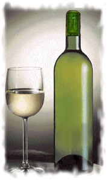

|
Nota:
Vinosalbarino.com no produce ni vende ninguna clase de albariño, ni
tampoco cobra ninguna comisión.
Las ofertas que mostramos a
continuación proceden de los vinos elaborados para consumo propio
por nuestros amigos que viven en la Comarca del Salnés. En algunos
casos, la cosecha producida excede de la cantidad que pueden
consumir en el ámbito familiar, y dicho excedente es el que se puede
adquirir a través de esta página web.

Vino albariño(*)
de elaboración artesanal para consumo propio,
sin ninguna clase de aditivos químicos. Ligeramente afrutado,
poco ácido y precioso color dorado transparente, sin impurezas.
Precio por botella - ... euros
ATENCIÓN: HEMOS SUSPENDIDO ESTE TIPO DE VENTAS
Envío mínimo por transportista: caja de madera
con 12 botellas
Pedido mínimo, entrega en Cambados (Pontevedra): 3
botellas
Costes de envío: 15,5 euros por cada caja de 12
botellas (incluido embalaje de madera).
Consultar costes para pedidos superiores a 5 cajas.
PEDIDO:
Por favor, los pedidos o consultas, realícelos a través de nuestro
[
FORMULARIO DE CONTACTO ]
Forma de pago:
- Se puede pagar en efectivo si se recoge directamente en
Cambados;
- mediante transferencia bancaria previa al envío;
- o contra reembolso, aunque en este último caso se deberán pagar
al menos los gastos de envío por anticipado, que se ven
incrementados en 5 euros (15,5 + 5) por las tasas del reembolso.
(*)
Vinosalbarino.com garantiza la excelente calidad del albariño puesto
aquí a la venta, tras haber procedido a su degustación previa, y con
pleno conocimiento de los métodos ancestrales y ecológicos empleados
para su elaboración.
|